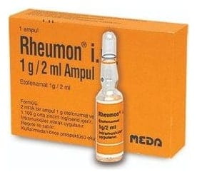

Rheumon I.M. 1 g/2 ml Enjeksiyonluk Çözelti İçeren Ampul, 1 Adet

Ne için kullanılır
KT · Bölüm 1RHEUMON İ.M., kas içine uygulama için 1 veya 3 adet şeffaf ampul içeren bir ilaçtır. RHEUMON İ.M., etkin madde olarak etofenamat içerir. Etofenamat, steroid olmayan analjezik/anti-romatik ajanlar grubuna ait bir etkin maddedir ve yangı önleyici (antiinflamatuvar) ve ağrı kesici (analjezik) özelliklere sahiptir. Aşağıdaki durumların tedavisinde kullanılır: • Dejeneratif eklem hastalığı, eklem kireçlenmesi (osteoartrit) • Eklem iltihabı ile görülen romatizmal hastalık (romatoid artrit) • Özellikle omurga eklemlerinde birleşme ve hareket kaybı ile görülen romatizmal bir hastalık (ankilozan spondilit)
• Zaman zaman ani şekilde ortaya çıkan, sıklıkla ayak baş parmağındaki iltihapla kendini gösteren, eklemler üzerinde ileri derecede ağrıya, duyarlılığa, kızarıklığa ve şişkinliğe neden olan eklem iltihabı (akut gut artriti) • Akut kas iskelet sistemi ağrıları • Ameliyat sonrası görülebilen inflamasyon, şişkinlik ve yumuşak doku hasarı (postoperatif ağrı) • Adet ağrısı (dismenore) Not: Enjeksiyonluk çözelti, yalnızca aşağıdaki durumlarda kullanılmalıdır: • Etofenamatın topikal (RHEUMON jel veya RHEUMON sprey) uygulamasının yararlı olmadığı veya uygun olmadığı durumlarda. • Steroid olmayan bir antiinflamatuvar ilacın (steroid yapıda olmayan yangı önleyici ilaçlar) ağız yoluyla alınmasının veya fitil şeklinde kullanılmasının yararlı olmadığı veya uygun olmadığı durumlarda. Kural olarak, tedavi tek bir enjeksiyonla sınırlandırılmalıdır. RHEUMON İ.M. etkin maddesinin uygulanan yerden yavaş salınması nedeniyle, hızlı etki başlangıcı gereken hastalıklarda tedavinin başlatılması için uygun değildir. Yağlı formülasyondan etkin maddenin yavaş salımı nedeniyle, RHEUMON İ.M. uygulamasından sonra etki süresi 24 saate kadar uzayabilir.